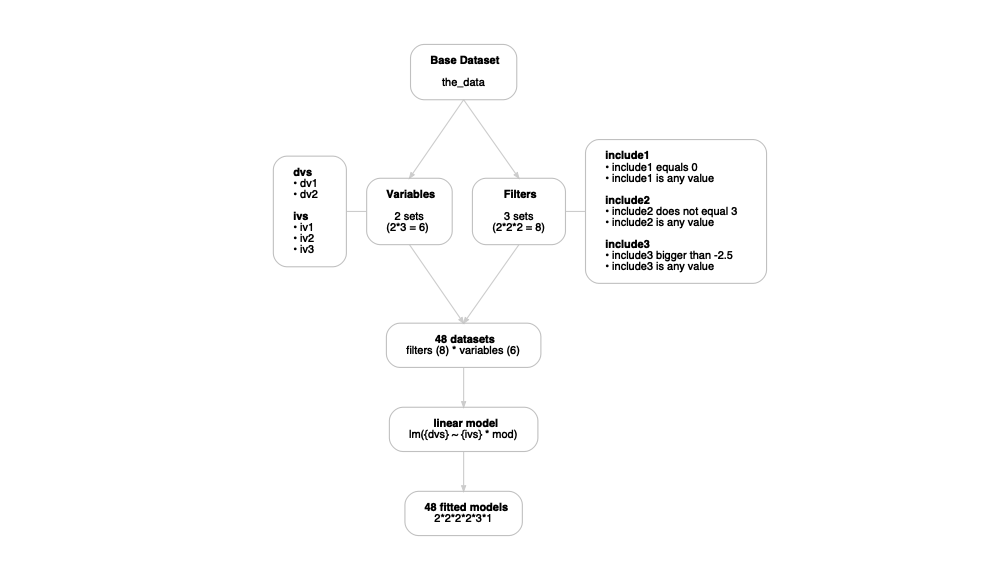
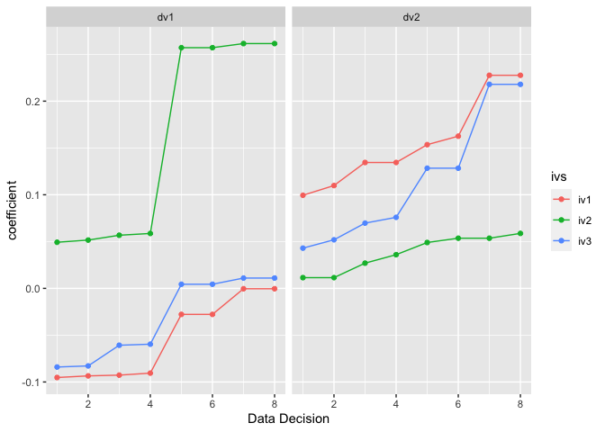

Plan · Analyze · Explore

Installation
You can install the development version of multitool from GitHub with:
# install.packages("devtools")
devtools::install_github("ethan-young/multitool")Motivation
The goal of multitool is to provide a set of tools for designing and running multiverse-style analyses. I designed it to help users create an incremental workflow for slowly building up, keeping track of, and unpacking multiverse analyses and results.
Beyond Multiverse
I designed multitool to do multiverse analysis but its really just a tool for exploration.
In any new field, area, or project, there is a lot of uncertainty about which data analysis decisions to make. Clear research questions and criteria help reduce uncertainty about how to answer them but they never fully reduce them. multitool helps organize and systematically explore different options. That’s really it.
Design
I designed multitool to help users take a single use case (e.g., a single analysis pipeline) and expand it into a workflow to include alternative versions of the same analysis.
For example, imagine you would like to take some data, remove outliers, transform variables, run a linear model, do a post-hoc analysis, and plot the results. multitool can take theses tasks and transform them into a blueprint, which provides instructions for running your analysis pipeline.
The functions were designed to play nice with the tidyverse and require using the base R pipe |>. This makes it easy to quickly convert a single analysis into a multiverse analysis.
Basic components
My vision of a multitool workflow contains five steps:

multitool cannot make decisions for you but – once you know your set of data decisions – it can help you create and organize them into the workflow above.
A defining feature of multitool is that it saves your code. This allows the user to grab the code that produces a result and inspect it for accuracy, errors, or simply for peace of mind. By quickly grabbing code, the user can iterate between creating their blueprint and checking that the code works as intended.
multitool allows the user to model data however they’d like. The user is responsible for loading the relevant modeling packages. Regardless of your model choice, multitool will capture your code and build a blueprint with alternative analysis pipelines.
Finally, multiverse analyses were originally intended to look at how model parameters shift as a function of arbitrary data decisions. However, any computation might change depending on how you slice and dice the data. For this reason, I also built functions for computing descriptive, correlation, and reliability analysis alongside a particular modelling pipeline.
Usage
library(tidyverse)
library(multitool)
# create some data
the_data <-
data.frame(
id = 1:100,
iv1 = rnorm(100),
iv2 = rnorm(100),
iv3 = rnorm(100),
mod = rnorm(100),
dv1 = rnorm(100),
dv2 = rnorm(100),
include1 = rbinom(100, size = 1, prob = .1),
include2 = sample(1:3, size = 100, replace = TRUE),
include3 = rnorm(100)
)
# create a pipeline blueprint
full_pipeline <-
the_data |>
add_filters(include1 == 0, include2 != 3, include3 > -2.5) |>
add_variables(var_group = "ivs", iv1, iv2, iv3) |>
add_variables(var_group = "dvs", dv1, dv2) |>
add_model("linear model", lm({dvs} ~ {ivs} * mod))
full_pipeline
#> # A tibble: 12 × 3
#> type group code
#> <chr> <chr> <chr>
#> 1 filters include1 include1 == 0
#> 2 filters include1 include1 %in% unique(include1)
#> 3 filters include2 include2 != 3
#> 4 filters include2 include2 %in% unique(include2)
#> 5 filters include3 include3 > -2.5
#> 6 filters include3 include3 %in% unique(include3)
#> 7 variables ivs iv1
#> 8 variables ivs iv2
#> 9 variables ivs iv3
#> 10 variables dvs dv1
#> 11 variables dvs dv2
#> 12 models linear model lm({dvs} ~ {ivs} * mod)
# Visualize the pipeline
create_blueprint_graph(full_pipeline)
# expand the pipeline
expanded_pipeline <- expand_decisions(full_pipeline)
expanded_pipeline
#> # A tibble: 48 × 4
#> decision variables filters models
#> <chr> <list> <list> <list>
#> 1 1 <tibble [1 × 2]> <tibble [1 × 3]> <tibble [1 × 2]>
#> 2 2 <tibble [1 × 2]> <tibble [1 × 3]> <tibble [1 × 2]>
#> 3 3 <tibble [1 × 2]> <tibble [1 × 3]> <tibble [1 × 2]>
#> 4 4 <tibble [1 × 2]> <tibble [1 × 3]> <tibble [1 × 2]>
#> 5 5 <tibble [1 × 2]> <tibble [1 × 3]> <tibble [1 × 2]>
#> 6 6 <tibble [1 × 2]> <tibble [1 × 3]> <tibble [1 × 2]>
#> 7 7 <tibble [1 × 2]> <tibble [1 × 3]> <tibble [1 × 2]>
#> 8 8 <tibble [1 × 2]> <tibble [1 × 3]> <tibble [1 × 2]>
#> 9 9 <tibble [1 × 2]> <tibble [1 × 3]> <tibble [1 × 2]>
#> 10 10 <tibble [1 × 2]> <tibble [1 × 3]> <tibble [1 × 2]>
#> # ℹ 38 more rows
# Use your blueprint to run the multiverse
multiverse_results <- run_multiverse(expanded_pipeline)
multiverse_results
#> # A tibble: 48 × 3
#> decision specifications model_fitted
#> <chr> <list> <list>
#> 1 1 <tibble [1 × 4]> <tibble [1 × 5]>
#> 2 2 <tibble [1 × 4]> <tibble [1 × 5]>
#> 3 3 <tibble [1 × 4]> <tibble [1 × 5]>
#> 4 4 <tibble [1 × 4]> <tibble [1 × 5]>
#> 5 5 <tibble [1 × 4]> <tibble [1 × 5]>
#> 6 6 <tibble [1 × 4]> <tibble [1 × 5]>
#> 7 7 <tibble [1 × 4]> <tibble [1 × 5]>
#> 8 8 <tibble [1 × 4]> <tibble [1 × 5]>
#> 9 9 <tibble [1 × 4]> <tibble [1 × 5]>
#> 10 10 <tibble [1 × 4]> <tibble [1 × 5]>
#> # ℹ 38 more rows
# Unpack some results
multiverse_results |>
reveal(.what = model_fitted, .which = lm_params, .unpack_specs = TRUE)
#> # A tibble: 192 × 18
#> decision ivs dvs include1 include2 include3 model model_meta filter_code
#> <chr> <chr> <chr> <chr> <chr> <chr> <chr> <chr> <glue>
#> 1 1 iv1 dv1 include1… include… include… lm(d… linear mo… the_data |…
#> 2 1 iv1 dv1 include1… include… include… lm(d… linear mo… the_data |…
#> 3 1 iv1 dv1 include1… include… include… lm(d… linear mo… the_data |…
#> 4 1 iv1 dv1 include1… include… include… lm(d… linear mo… the_data |…
#> 5 2 iv1 dv2 include1… include… include… lm(d… linear mo… the_data |…
#> 6 2 iv1 dv2 include1… include… include… lm(d… linear mo… the_data |…
#> 7 2 iv1 dv2 include1… include… include… lm(d… linear mo… the_data |…
#> 8 2 iv1 dv2 include1… include… include… lm(d… linear mo… the_data |…
#> 9 3 iv2 dv1 include1… include… include… lm(d… linear mo… the_data |…
#> 10 3 iv2 dv1 include1… include… include… lm(d… linear mo… the_data |…
#> # ℹ 182 more rows
#> # ℹ 9 more variables: parameter <chr>, coefficient <dbl>, se <dbl>, ci <dbl>,
#> # ci_low <dbl>, ci_high <dbl>, t <dbl>, df_error <int>, p <dbl>
# Summarize an effect
multiverse_results |>
reveal(.what = model_fitted, .which = lm_params, .unpack_specs = TRUE) |>
filter(str_detect(parameter, "iv")) |>
condense(coefficient, list(mean = mean, median = median))
#> # A tibble: 1 × 2
#> coefficient_mean coefficient_median
#> <dbl> <dbl>
#> 1 -0.00802 -0.0319
# Plot your effects
multiverse_results |>
reveal(.what = model_fitted, .which = lm_params, .unpack_specs = TRUE) |>
filter(str_detect(parameter, "^iv\\d$")) |>
group_by(ivs, dvs) |>
mutate(sorted_decision = fct_reorder(as_factor(decision), coefficient) |> as.numeric()) |>
ggplot(aes(x = sorted_decision, y = coefficient, color = ivs)) +
geom_line() +
geom_point() +
facet_wrap(~dvs, scales = "free_x") +
scale_x_continuous("Data Decision")